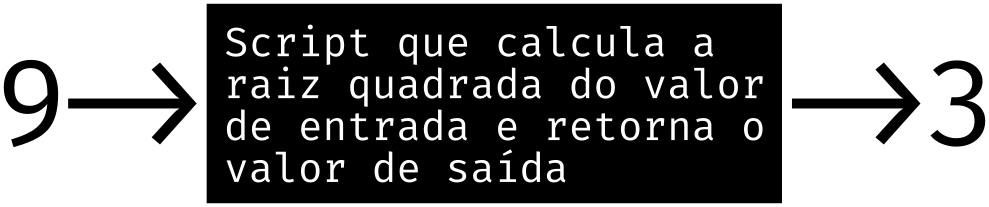
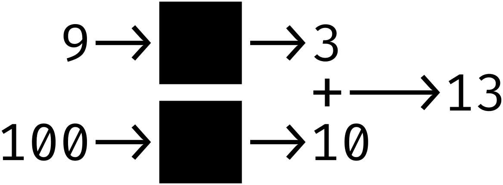

Para aprender qualquer linguagem de programação é preciso entender
quais são as suas:
expressões primitivas (componentes básicos da
linguagem, como números, strings e booleanos);
meios de combinação (mecanismos que combinam
elementos para formar expressões mais complexas);
E os meios de abstração (os quais permitem dar
nomes e manipular elementos compostos, como os dados, procedimentos
e processos).
1.1.1 Expreções,
1.1.2 Nomes e o Ambiente e
1.1.3 Avaliando Combinações
1.1.4 Procedimentos Compostos
Uma expressão é o meio usado para expressar algo para
a maquina. Se quero expressar a valor dez, digito 10, se
quero nomear uma expressão dafino um nome para ela e depois o seu
valor:
;; Dados simples
10 ;; Retorna 10
"Nome" ;; Retorna "Nome"
;; Nomeando Dados (Variaveis)
;; (define <nome><dado> )
(define idade 20) ;; Numero
(define nome "Fulano") ;; String
(define amo-estudar #t) ;; Booleano
;;(#t Verdade, #f Falso)
;; Chamando as Variaveis
idade ;; Retorna 20
nome ;; Retorna "Fulano"
amo-estudar ;; Retorna #t
São pelos meios de combinação que criamos
procedimentos mais robustos, permitindo expressar conceitos mais
complexos, vejamos:
;; Números inteiros
(define a 10)
(define b 5)
;; Operações aritméticas
(+ a b) ;; Soma: 15
(- a b) ;; Subtração: 5
(* a b) ;; Multiplicação: 50
(/ a b) ;; Divisão: 2
(* 10 (/ (- (+ a b) (- a b)) 2));; Retorna 50
;; String
(define nome "Fulano")
(define sobrenome "de Tal")
;; Concatenando strings
(string-append nome " " sobrenome) ;; Retorna "Fulano de Tal"
;; Expressões lógicas (Booleano)
;; Operador 'and'
(and #t #t) ;; Retorna #t
(and #t #f) ;; Retorna #f
(and #f #t) ;; Retorna #f
(and #f #f) ;; Retorna #f
;; Operador 'or'
(or #t #t) ;; Retorna #t
(or #t #f) ;; Retorna #t
(or #f #t) ;; Retorna #t
(or #f #f) ;; Retorna #f
;; Operador 'not'
(not #t) ;; Retorna #f
(not #f) ;; Retorna #t
;; Combinando Expressões Lógicas
(and (or #t #f) (not #f)) ;; Retorna #t
Para manipular expressões, expressões primitivas, meios de combinação
como se fosse um unico elemento, um objeto abstrato usa-se funções. As
quais são uma entidade que recebe argumentos e retorna um valor:
;; A estrutura da função é:
;; (define (nome-da-função <parâmetro>)
;; <corpo>)
;; Definindo uma função simples
(define (quadrado x)
(* x x))
;; Usando a função
(quadrado 5) ;; Retorna 25
A função quadrado recebe o parâmetro x e
utiliza-se de meios de combinação para calcular o quadrado de um
número qualquer representado pelo parâmetro x.
Outra tipo de função é a anônima, ou seja, uma função que não tem
nome. Em Scheme, funções anônimas ou lambda são criadas usando a
palavra-chave lambda. Elas são úteis para criar funções temporárias ou
para passar funções como argumentos para outras funções:
;; Definindo uma função anônima. Estrutura:
;; ((lambda (<parâmetro>) (<corpo>)) <valor-do-parâmetro>)
((lambda (x) (* x x)) 3) ;; Retorna 9
;; Usando lambda em uma função definida
(define quadrado (lambda (x) (* x x)))
(quadrado 3) ;; Retorna 9
1.1.5 Modelo de Substituição para Aplicação de Procedimentos
O modelo de substituição é uma técnica que descreve a
execução de funções como um processo de substituição, onde as chamadas
de procedimento são substituídas por seus corpos, com os argumentos
apropriados.
(define (square x)
(* x x)) ;; Corpo
(square 3) ;; Chamada
O modelo de substituição segue três passos principais:
Expansão (Substituição): A chamada do procedimento
é substituída pelo seu corpo, trocando os parâmetros formais pelos
valores dos argumentos.
;; Isso (square 3) é substituido por:
(* 3 3)
Redução (Avaliação): A expressão resultante é
avaliada até que se torne um valor.
;; Isso (* 3 3) retorna:
9
Encerramento: Quando o resultado final é um valor
atômico (exemplo: um número), o processo termina.
O modelo de substituição permite visualizar dois estilos de avaliação:
Avaliação Aplicativa (Applicative Order - "Eager"):
Avalia primeiro os argumentos, depois substitui a função.
Avaliação Normal (Normal Order - "Lazy"): A função
é expandida antes da avaliação dos argumentos.
Comparação com código
(define (square x)
(* x x))
;;;;;;;;;;;;;;;;;;;;;;;;;;;;;;;;;;;;;;;;;;;;;;;;;;;;;;;;;;;;;;;;;;;;;;;;;;;;;;;;;;;;;;;;;;
;; #Applicative Order - "Eager"
;; Exemplo 1: Cálculo desnecessário
(square (+ 3 4)) ;; Chamada
→ (square 7) ;; Primeiro avaliamos (+ 3 4)
→ (* 7 7) ;; Agora substituímos o corpo
→ 49 ;; Reduzimos para o resultado final
;; Aqui, avaliar (+ 3 4) antes faz sentido, pois será usado na função.
;;;;;;;;;;;;;;;;;;;;;;;;;;;;;;;;;;;;;;;;;;;;;;;;;;;;;;;;;;;;;;;;;;;;;;;;;;;;;;;;;;;;;;;;;;
;; #Normal Order - "Lazy"
;; Exemplo 1: Cálculo adiado
(square (+ 3 4)) ;; Chamada
→ (* (+ 3 4) (+ 3 4)) ;; Primeiro substituímos a função sem avaliar os argumentos
→ (* 7 7) ;; Agora avaliamos (+ 3 4), quando necessário
→ 49
;; Mesmo resultado, mas os argumentos foram avaliados apenas quando precisaram ser usados.
(define (choose-first x y)
x) ;; Apenas retorna x, ignorando y
;;;;;;;;;;;;;;;;;;;;;;;;;;;;;;;;;;;;;;;;;;;;;;;;;;;;;;;;;;;;;;;;;;;;;;;;;;;;;;;;;;;;;
;; #Applicative Order - "Eager"
;; Exemplo 2: Avaliação desnecessária
(choose-first 3 (* 1000 1000))
→ (choose-first 3 1000000) ;; Avaliamos (* 1000 1000) primeiro (mesmo sem precisar!)
→ 3 ;; Apenas retorna x, então o cálculo foi inútil!
;; Aqui, o cálculo (* 1000 1000) foi feito mesmo sem necessidade!
;;;;;;;;;;;;;;;;;;;;;;;;;;;;;;;;;;;;;;;;;;;;;;;;;;;;;;;;;;;;;;;;;;;;;;;;;;;;;;;;;;;;;
;; #Normal Order - "Lazy"
;; Exemplo 2: Cálculo evitado
(choose-first 3 (* 1000 1000))
→ 3 ;; Nunca avaliamos (* 1000 1000) porque o segundo argumento não foi usado!
;; Aqui, evitamos o cálculo desnecessário!
;; Exemplo 3: Erro inevitável
(choose-first 3 (/ 1 0)) ;; #Applicative Order - "Eager"
→ (choose-first 3 ERRO) ;; Avalia (/ 1 0) antes → erro!
;; Erro: Não se pode dividir por 0
;; Erro ocorre mesmo que y não seja usado!
;;;;;;;;;;;;;;;;;;;;;;;;;;;;;;;;;;;;;;;;;;;;;;;;;;;;;;;;;;;;;;;;;;;;;;;;;;;;
(choose-first 3 (/ 1 0)) ;; #Normal Order - "Lazy"
→ 3 ;; Nunca avaliamos (/ 1 0), então evitamos o erro!
;; Aqui, evitamos o cálculo desnecessário!
1.1.6 Expressões Condicionais e Predicados
...
Exercício 1.1:
Abaixo está uma sequência de expressões. Qual é o resultado impresso
pelo interpretador em resposta a cada expressão? Suponha que a
sequência seja avaliada na ordem em que é apresentada.
10
;; 10
(+ 5 3 4)
;; 12
(- 9 1)
;; 8
(/ 6 2)
;; 3
(+ (* 2 4) (- 4 6))
;; 6
(define a 3)
;;
(define b (+ a 1))
;;
(+ a b (* a b))
;; 19
(= a b)
;; #f
(if (and (> b a) (< b (* a b)))
b
a)
;; 4
(cond ((= a 4) 6)
((= b 4) (+ 6 7 a))
(else 25)) ;; 16
(+ 2 (if (> b a) b a))
;; 6
(* (cond ((> a b) a)
((< a b) b)
(else -1))
(+ a 1))
;; 16
Exercício 1.2:
Traduza a seguinte expressão para a forma prefixa:
Defina um procedimento que receba três números como argumentos e
retorne a soma dos quadrados dos dois maiores números.
(define (quadrado n)
(* n n))
;; Solução 1
(define (maiores x y z)
(if (or ;; x² + y²
(and (= x y) (= y z)) ;; x = y = z {xy}
(and (> y x) (> x z)) ;; y > x > z {xy}
(and (> x y) (> y z)) ;; x > y > z {xy}
(and (> y z) (= x y)) ;; x = y > z {xy}
)
(+ (quadrado x) (quadrado y))
(if (or ;; z² + x²
(and (> z x) (> x y)) ;; z > x > y {xz}
(and (> x z) (>= z y)) ;; x > z >= y {xz}
(and (> x y) (= x z)) ;; z = x > y {xz}
)
(+ (quadrado z) (quadrado x))
(if (or ;; z² + y²
(and (> z y) (>= y x)) ;; z > y >= x {yz}
(and (> y z) (>= z x)) ;; y > z >= x {yz}
(and (> y x) (= z y)) ;; z = y > x {yz}
)
(+ (quadrado z) (quadrado y))
-1))))
;; Tudo diferente
(maiores 1 2 3)
(maiores 1 3 2)
(maiores 2 1 3)
(maiores 2 3 1)
(maiores 3 1 2)
(maiores 3 2 1)
;; Tudo igual
(maiores 1 1 1)
;; Dois menores
(maiores 2 1 1)
(maiores 1 2 1)
(maiores 1 1 2)
;; Dois maiores
(maiores 1 2 2)
(maiores 2 1 2)
(maiores 2 2 1)
Exercício 1.4:
Observe que nosso modelo de avaliação permite combinações cujos
operadores são expressões compostas. Use essa observação para
descrever o comportamento do seguinte procedimento:
;; (define (a-plus-abs-b a b)
;; ((if (> b 0) + -) a b))
(a-plus-abs-b a b) ;; Chamada
→ ( ;; Expansão
→ (if (> b 0) ;; Expansão {Se b > 0 então:
→ + ;; + se não:
→ -) ;; -}
→ a b) ;; Sendo b > 0 fica (+ a b)
;; Sendo b <= 0 fica (- a b)
Exercício 1.5:
Ben Bitdiddle inventou um teste para determinar se o interpretador que
ele enfrenta está usando avaliação em ordem aplicativa ou em ordem
normal. Ele define os seguintes dois procedimentos:
(define (p) (p))
(define (test x y)
(if (= x 0)
0
y))
Então ele avalia a expressão:
(test 0 (p))
;; Resposta
→ if (#t) ;; 0 = 0
→ 0 ;; Resultado
;; y Essa parte nunca é chamada
1.1.7 Exemplo: Raízes Quadradas pelo Método de Newton
A Ciência da Computação é a arte de criar instruções eficazes (como
fazer), diferindo-se da matemática, que busca verdades absolutas (o
que é). Por exemplo:
Matemática: Define a raiz quadrada como
Computação: Exige um procedimento para calcular
y, como o método iterativo de Newton.
O método de Newton consiste em melhorar iterativamente uma estimativa
até atingir precisão desejada:
Palpite Inicial: Comece com uma estimativa (ex:
y = 1).
Iteração: Calcule a média entre y e
x/y:
Critério de Parada: Repita até ∣y² -
x∣ < tolerância.
Implementação em Scheme (LISP):
;; Calcula o quadrado de um número
(define (quadrado x)
(* x x))
;; Define a média entre dois números
(define (media x y)
(/ (+ x y) 2))
;; Refina a estimativa usando o método de Newton
(define (melhora-estimativa estimativa x)
(media estimativa (/ x estimativa)))
;; Verifica se a estimativa é suficientemente precisa
(define (estimativa-boa? estimativa x)
(< (abs (- (quadrado estimativa) x)) 0.001))
;; Processo iterativo (recursivo) para busca da raiz
(define (raiz-iterativa estimativa x)
(if (estimativa-boa? estimativa x)
estimativa
(raiz-iterativa (melhora-estimativa estimativa x) x)))
;; Função principal: inicia com estimativa = 1.0
(define (raiz x)
(raiz-iterativa 1.0 x))
;; Exemplo: Raiz de 625 ≈ 25.0
(raiz 625)
Exercício 1.6:
Alyssa P. Hacker não entende por que
if precisa ser fornecido como uma forma especial. “Por
que não posso simplesmente defini-lo como um procedimento ordinário em
termos de cond?”, ela pergunta. A amiga de Alyssa, Eva Lu
Ator, afirma que isso pode ser feito, e ela define uma nova versão de
if:
O que acontece quando Alyssa tenta usar isso para calcular raízes
quadradas? Explique.
O if é uma forma especial que somente avalia
else-clause se o predicate for falso, o
new-if torna possível avaliar o
else-clause independente do
predicate criando um loop infinito
ao chamar a função sqrt-iter recursivamente.
Exercício 1.7:
O teste good-enough? usado no cálculo de raízes quadradas
não será muito eficaz para encontrar as raízes quadradas de números
muito pequenos. Além disso, em computadores reais, as operações
aritméticas são quase sempre realizadas com precisão limitada. Isso
torna nosso teste inadequado para números muito grandes. Explique
essas afirmações, com exemplos mostrando como o teste falha para
números pequenos e grandes. Uma estratégia alternativa para
implementar good-enough? é observar como
guess
muda de uma iteração para a próxima, e parar quando a mudança é uma
fração muito pequena do palpite. Projete um procedimento de raiz
quadrada que use esse tipo de teste final. Isso funciona melhor para
números pequenos e grandes?
O código estipula uma diferença entre o palpite e a raiz de um
milésimo (1/100 ou 0,001), isso limita o código a achar raízes que
se enquadre nessa limitação.
Quando os números são muito pequenos — próximos de 0 (zero)
— a probabilidade de o retorno da raiz ser precoce por conta
do ponto 1. é grande. Exemplo: A raiz quadrada de 0.0001 é
0.01, porém o código retorna 0.03230844833048122, uma diferença de
0,02230844833048122 (≈ 69,05%).
Agora quando com números muito grandes a situação 2. também
pode ser aplicada, porém, só é relevante quando há casas decimeis em
ordem de um décimo de milésimo (1/10000 ou 0,0001) de grandeza.
Entretanto, quando há números >= quatorze casas decimais não
retorna o resultado por falta de potência computacional.
;; Essa é a resposta
(define (good-enough? guess next-guess)
(<
(abs (- guess next-guess ))
(* guess 0.001))) ;; 0.1% de tolerância, poderia ser (/ guess 100)
;; A ideia é comparar o palpite novo com o antigo
;; caso a diferença for 1% então #t (true)
;; Restante do código para que a resposta funcione
(define (sqrt-iter guess x)
;; Com let crio uma variável local next-guess
;; para entrar como atributo em good-enough?
;; (let <variável> <valor>) ou
;; (let (<var1> <valor1>) (<var2> <valor2>))
(let ((next-guess (improve guess x))) ;; Acrescentei a linha
(if (good-enough? guess next-guess) ;; Alterei os atributos
next-guess ;; Alterei o retorno
(sqrt-iter next-guess x)))) ;; Alterei o atributo
(define (improvee guess x)
(/ ( + guess (/ x guess)) 2)) ;; Simplifiquei
(define (sqrt x)
(sqrt-iter 1.0 x))
;; (sqrt n) ;; Raiz quadrada de n
Exercício 1.8:
O método de Newton para raízes cúbicas é baseado no fato de que, se y
é uma aproximação da raiz cúbica de x , então uma aproximação melhor é
dada pelo valor
Use essa fórmula para implementar um procedimento de raiz cúbica
análogo ao procedimento de raiz quadrada.
(define (good-enough? guess next-guess)
(
;; Mesmo código
))
(define (cube-root-iter guess x) ;; Alterei o nome da função
(
;; Mesmo código
(cube-root-iter next-guess x))) ;;...
(define (improve y x) ;; Mudei o atributo guess por y
(/ (+ (/ x (* y y)) (* 2 y)) 3)) ;; Mudei o corpo
(define (cube-root x) ;; Mudei o nome da função
(cube-root-iter 1.0 x)) ;; ...
;; (cube-root n) ;; Raiz cubica de n
1.1.8 Procedimentos como Abstrações de Caixa Preta
A computação não lida com objetos reais, mas com objetos virtuais2. Esses objetos são imaginados ou idealizados para representar
conceitos e sistemas complexos de forma simplificada. Não há distinção
significativa entre o que é possível construir e o que é possível
imaginar, desde que se tenha o conhecimento necessário para
transformar a ideia em realidade.
Abstração de caixa-preta é nada mais que uma técnica de abstração a
qual simplifica a manipulação de sistemas complexos ao ocultar
detalhes internos do funcionamento de um processo, expondo apenas suas
interfaces: as entradas e saídas. Esse conceito facilita a
compreensão, reutilização e ampliação de sistemas, permitindo que cada
caixa seja tratada como uma unidade funcional:
Aqui, o método usado para calcular a raiz quadrada é abstraído como
uma caixa-preta: você sabe o que entra e o que sai, mas não precisa
entender os detalhes do cálculo.

A técnica permite que sistemas sejam escalados sem aumento
significativo na complexidade. Por exemplo:

As caixas-pretas podem conter outras caixas-pretas.
2 No contexto filosófico, o real e o
virtual são formalizações que diferenciam o tangível do imaginário.
Na ciência da computação, lidamos com sistemas idealizados,
abstraídos e tratados como se estivessem numa "caixa mágica". Essa
"caixa" é uma metáfora para sistemas computacionais que parecem
possuir uma espécie de "espírito", capaz de executar as ideias
previamente idealizadas e definidas por nós. Por meio dessas
abstrações, é possível simplificar, organizar e manipular sistemas
complexos, permitindo que o foco esteja em como esses objetos
interagem e se comportam, em vez de nos detalhes técnicos de sua
implementação interna.